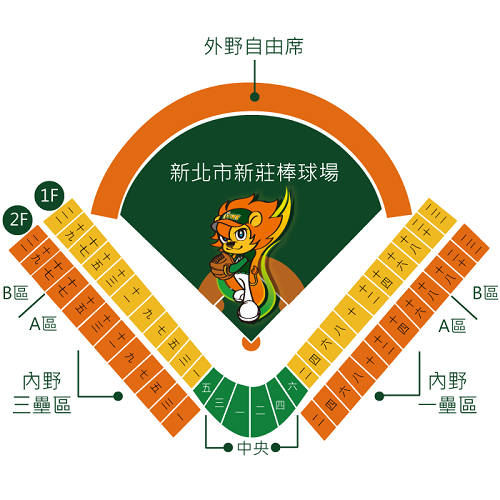

新北市新莊棒球場 |
|
| 簡介 | |
| 1997年中華職棒總冠軍賽第二戰在新莊球場舉行，從此這個位於台北縣的新球場就成為球迷經常造訪的棒球新天地。1997年以來連續五年成為總冠軍賽的場地，其重要性可見一般，尤其是當台北市立棒球場在2000年年底功成身退後，新莊球場更成為台北地區最重要的棒球聖地。 新莊棒球場位於新莊體育園區，在一片綠意的設計環繞下，成為球迷觀眾攜家帶眷的好去處；觀眾席後方寬大的廊區提供了觀眾廣闊的活動空間，成為新莊球場的特色之一。 新莊球場的外野席在落成之際並無座椅，球迷以席地而坐的方式觀看球賽；台北縣政府特別在2003年完成外野座席的整建工程，將整個新莊球場的座席數提到到一萬席。擴建工程同時包括了大螢幕的安裝，成為台灣第三個擁有大螢幕的棒球場。 |
|
| 場內座位資訊 | |
|  | |
| 觀眾數：12,500 席 / 內野數：8,500 席 / 外野數：4,000 席 / 內野：草皮 右外野：325 英呎 / 左外野：325 英呎 / 中外野：400 英呎 / 大螢幕：有 |
|
| 交通資訊 | |
| 台北捷運 | 新莊線新莊站，1號出口，沿著中華路步行至公園路左轉，再於和興街右轉，即可抵達球場周邊。 |
| 台北市公車 | 299 , 299區 , 616 , F202 , 新莊棒球場。 |
| 新北市公車 | 99低底盤 , 805低底盤 , 820低底盤 , 藍18低底盤搭至新莊棒球場站。或搭乘 F202 至新莊田徑場站。 |
| 自行開車 | 中山高速公路五股交流道，取新五路直行，於中山路（二省道）右轉，於新泰路左轉後直行至復興路左轉即可。或經台北市取道忠孝橋，至新莊下橋後於思源路左轉，直行至復興路右轉，於和興街左轉即可抵達。 |
| 停車資訊 | 汽車：新莊運動公園收費停車。 機車：球場週邊有免費停車場。 |